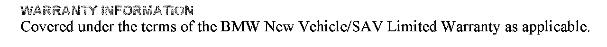
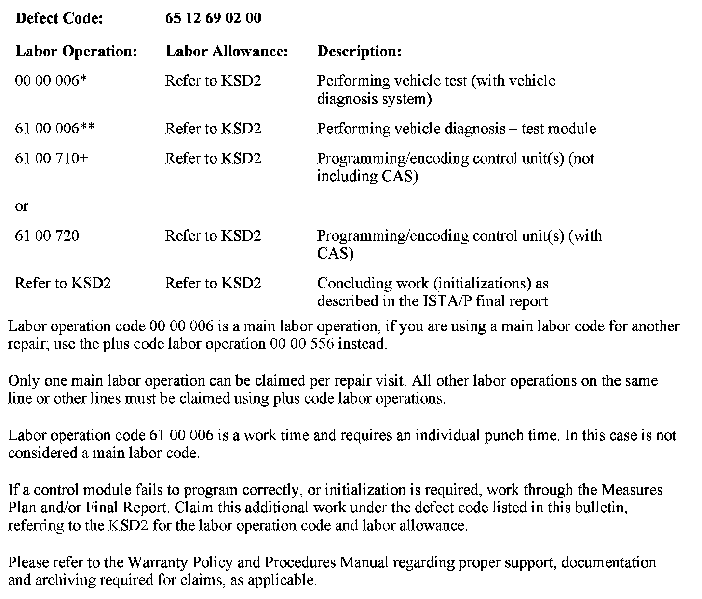

Audio - RAD2+ Audio Is Intermittently Inoperative
SI B65 01 11Audio, Navigation, Monitors, Alarms, SRS
April 2011
Technical Service
SUBJECT
RAD2+: Audio Is Inoperative Intermittently
MODEL
E82, E88 (1 Series)
E90, E91, E92, E93 (3 Series)
Vehicles produced from 09/2009 with option 663 (Radio BMW Professional, RAD2+) and option 676 (HIFI Loudspeaker System)
SITUATION
Intermittently there is no audio output afier vehicle start-up. The radio is working.
^ The AM/FM radio station, CD or AUX is displayed correctly.
^ The backlight is on.
^ All buttons on the radio are working.
Switching the audio mode and/or the radio off/on or performing any other selection will not resume audio functionality.
Only after a sleep mode cycle will the radio operate correctly again.
CAUSE
Overvoltage spike during vehicle start-up
CORRECTION
Do not replace parts!
Connect a BMW approved battery charger and perform a vehicle test using the latest ISTA (Integrated Service Technical Application) diagnostic software.
Diagnose any relevant faults to these control units that are stored by completing the test plans.
Reprogram the vehicle using ISTA/P 2.41.1 or later.
Note that ISTA/P will automatically reprogram and code all programmable control modules that do not have the latest software.
For information on programming and coding with ISTA/P, refer to CenterNet / Aftersales Business Development & Marketing Portal / Service Operations /Workshop Technology/Vehicle Programming.


WARRANTY INFORMATION